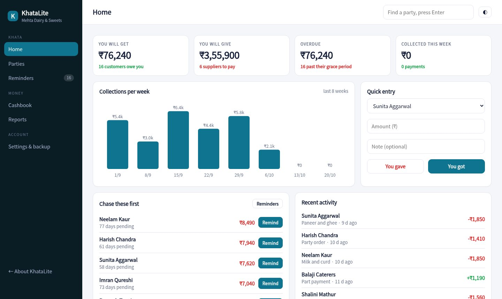
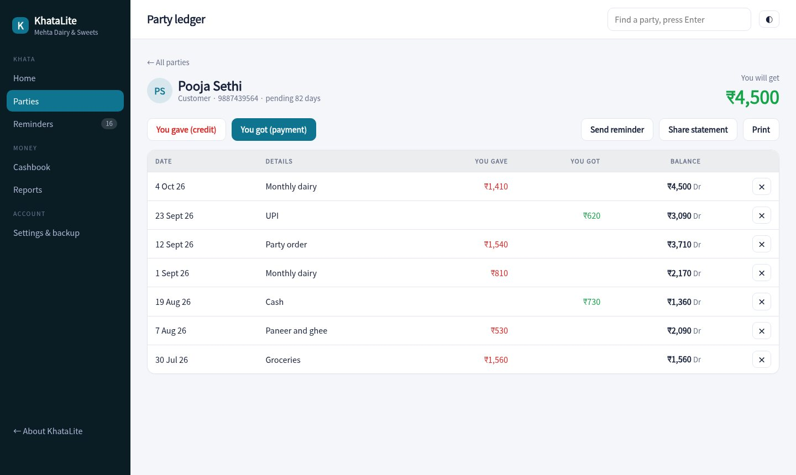
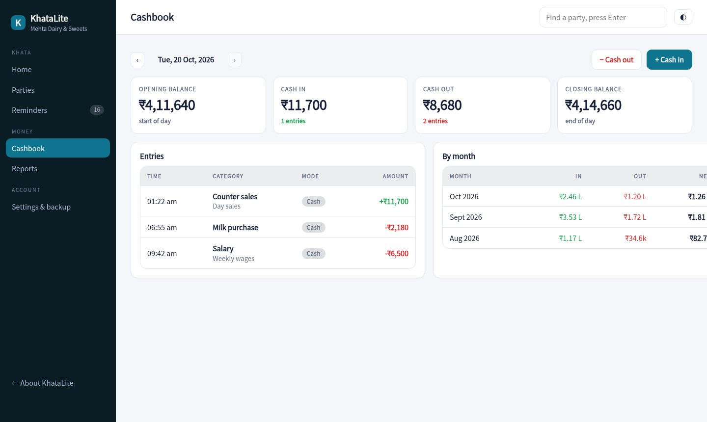

Write every udhaar once. KhataLite keeps each customer's balance, tells you who is overdue and sends a polite WhatsApp reminder with a UPI link.

One list for people who owe you and people you owe. Each ledger shows every entry and a running balance.
Pick gentle, firm or final. The message opens in WhatsApp, already written, with a link to the customer's statement.
Share a statement link. They see what they owe and a UPI QR for the exact amount. No app to install.
Set a grace period per customer. KhataLite counts days from the first unpaid entry, so you know who is really late.
Record sales and expenses by category, see the opening and closing balance, and look back day by day.
Download everything as a file and restore it on another phone or computer whenever you like.
Totals for what you will get and give, the customers to chase first, and a quick entry box for the busy hours.
Tap a name to see the full history. Add what you gave or got in two taps, and share or print the statement.

Cash in and out by category with the closing balance carried forward, plus a monthly summary for your accountant.

Enter customers and suppliers with a mobile number. Set how many days of grace each customer gets.
Tap You gave when you sell on credit and You got when money comes in.
Open Reminders on Monday, pick a tone, and send the overdue ones from WhatsApp.
Sample pricing for this concept build.
No. They receive a normal WhatsApp message with a link. The page opens in any browser and shows a UPI QR.
Yes. Suppliers sit in the same list. The balance shows what you will give instead of what you will get.
Each customer has a grace period. Days are counted from the oldest unpaid entry, after payments are applied to the oldest credit first.
No. It is generated for a made-up dairy and stays in your browser.
Open a customer, record a payment and send yourself a reminder.
Open the khata